CODING AGENTS AS PIXEL WORLD MODELS
traex/GPT-5.6-Sol · 0127
点击播放 · 原生 RGB 像素
逐轮保存的候选
回放视频、检查图与代码变化。
每份候选均可单独播放。实际图片检查记录在下方工具轨迹中。
候选 01播放与检查图
点击播放 · 原生 RGB 像素
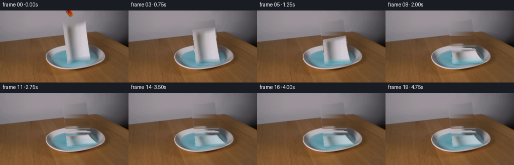
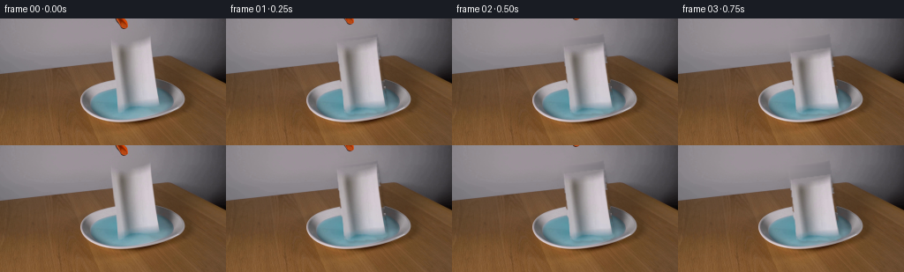
展开代码变化
--- 上一保存版本
+++ 本次保存版本
@@ -0,0 +1,187 @@
+from pathlib import Path
+import cv2
+import numpy as np
+from PIL import Image
+import artifact_io
+
+CASE = Path(__file__).resolve().parent
+W, H = 256, 144
+
+
+def soft_mask(mask, sigma=0.8):
+ m = mask.astype(np.float32) / 255.0
+ if sigma:
+ m = cv2.GaussianBlur(m, (0, 0), sigma)
+ return np.clip(m, 0, 1)
+
+
+def composite(base, layer, alpha):
+ a = np.clip(alpha[..., None], 0, 1)
+ return base * (1-a) + layer * a
+
+
+def build_clean(frame):
+ """Remove the towel/tool, reconstructing only the small occluded area."""
+ img = frame.copy()
+ towel = np.zeros((H, W), np.uint8)
+ cv2.fillPoly(towel, [np.array([[124,23],[171,17],[183,99],[177,105],
+ [139,108],[133,103]], np.int32)], 255)
+ tool = np.zeros((H, W), np.uint8)
+ cv2.ellipse(tool, (137, 2), (8, 15), -35, 0, 360, 255, -1)
+ remove = cv2.bitwise_or(towel, tool)
+ # Telea gives a coherent first estimate and retains the original photographic noise.
+ clean = cv2.inpaint(cv2.cvtColor(img, cv2.COLOR_RGB2BGR), remove, 7,
+ cv2.INPAINT_TELEA)
+ clean = cv2.cvtColor(clean, cv2.COLOR_BGR2RGB).astype(np.float32)
+
+ # Replace inpaint streaks by smooth, scene-aware reconstruction. The wall is
+ # low-frequency; the plate is reconstructed row-wise from its visible sides.
+ yy, xx = np.mgrid[0:H, 0:W]
+ rep = clean.copy()
+ for y in range(H):
+ xs = np.flatnonzero(towel[y] > 0)
+ if not len(xs):
+ continue
+ lo, hi = int(xs.min()), int(xs.max())
+ if y < 66: # grey studio wall / rear tabletop
+ l0, r0 = max(0, lo-15), min(W-1, hi+15)
+ c0 = np.mean(frame[y, max(0,l0-4):l0+1], axis=0)
+ c1 = np.mean(frame[y, r0:min(W,r0+5)], axis=0)
+ for x in xs:
+ q = (x-lo)/max(1,hi-lo)
+ rep[y,x] = c0*(1-q)+c1*q
+ elif 70 <= y <= 117: # dish/liquid: use visible same-row material
+ outer = ((np.arange(W)-150)/60.0)**2 + ((y-92)/27.0)**2 <= 1
+ inner = ((np.arange(W)-150)/51.0)**2 + ((y-92)/19.0)**2 <= 1
+ for x in xs:
+ is_inner = inner[x]
+ candidates = np.flatnonzero((inner if is_inner else (outer & ~inner)) & (towel[y]==0))
+ if len(candidates):
+ # Weighted nearby material samples preserve the plate's vertical shading.
+ d = np.abs(candidates-x)
+ take = candidates[np.argsort(d)[:min(12,len(candidates))]]
+ col = np.mean(frame[y,take].astype(np.float32), axis=0)
+ rep[y,x] = col
+ # tabletop areas are already convincingly handled by inpainting.
+
+ # Restore subtle noise/gradients and feather only inside the removed shape.
+ rep = cv2.GaussianBlur(rep, (0,0), 0.45)
+ a = soft_mask(remove, 1.2)
+ out = composite(img.astype(np.float32), rep, a)
+ return np.clip(out, 0, 255).astype(np.uint8), towel, tool
+
+
+def warp_rgba(rgb, alpha, src_quad, dst_quad):
+ M = cv2.getPerspectiveTransform(np.float32(src_quad), np.float32(dst_quad))
+ wrgb = cv2.warpPerspective(rgb, M, (W,H), flags=cv2.INTER_CUBIC,
+ borderMode=cv2.BORDER_CONSTANT, borderValue=0)
+ wa = cv2.warpPerspective(alpha, M, (W,H), flags=cv2.INTER_CUBIC,
+ borderMode=cv2.BORDER_CONSTANT, borderValue=0)
+ return wrgb.astype(np.float32), np.clip(wa.astype(np.float32)/255.0, 0, 1)
+
+
+def add_ripples(base, i):
+ # Fine, low-contrast wave rings caused by paper meeting the liquid.
+ if not (3 <= i <= 12):
+ return base
+ out = base.copy()
+ p = (i-3)/9.0
+ fade = np.sin(np.pi*np.clip(p,0,1))
+ overlay = np.zeros_like(out, np.float32)
+ am = np.zeros((H,W), np.float32)
+ for k in range(2):
+ rx = int(13 + 26*p + 9*k)
+ ry = max(2, int(3 + 7*p + 2*k))
+ cv2.ellipse(overlay, (157,101), (rx,ry), 0, 188, 350,
+ (198,239,244), 1, cv2.LINE_AA)
+ cv2.ellipse(am, (157,101), (rx,ry), 0, 188, 350,
+ float(0.22*fade/(k+1)), 1, cv2.LINE_AA)
+ liquid = ((((np.arange(W)[None,:]-150)/51.0)**2 +
+ ((np.arange(H)[:,None]-92)/19.0)**2) <= 1).astype(np.float32)
+ return composite(out, overlay, np.clip(am*liquid,0,1))
+
+
+def main():
+ first = np.array(Image.open(CASE/'first_frame.png').convert('RGB'), dtype=np.uint8)
+ clean, towel_mask, tool_mask = build_clean(first)
+ src = np.array([[125,24],[170,18],[182,100],[137,105]], np.float32)
+
+ # Hand-authored perspective poses: a slight free drop followed by buckling and
+ # tipping into the shallow dish. End state remains fully within the plate.
+ poses = [
+ [[125,24],[170,18],[182,100],[137,105]],
+ [[125,27],[170,21],[182,102],[137,106]],
+ [[126,32],[171,27],[183,103],[137,106]],
+ [[127,39],[172,33],[184,104],[137,106]],
+ [[129,48],[174,40],[186,104],[137,106]],
+ [[131,58],[176,50],[188,104],[137,106]],
+ [[132,68],[178,61],[191,104],[137,106]],
+ [[132,76],[179,71],[194,103],[137,106]],
+ [[132,82],[178,78],[197,102],[137,106]],
+ [[132,84],[177,81],[198,101],[137,106]],
+ [[131,85],[176,82],[197,101],[138,107]],
+ [[131,85],[175,82],[196,101],[138,107]],
+ [[131,85],[175,83],[196,102],[138,107]],
+ ]
+ while len(poses) < 20:
+ # Tiny damp-paper settling, not camera motion.
+ j=len(poses)
+ poses.append([[131,85],[175,83],[196,102+(1 if j>15 else 0)],[138,107]])
+
+ # More precise alpha: polygon shape with a softly antialiased edge.
+ alpha = np.zeros((H,W), np.uint8)
+ cv2.fillPoly(alpha, [np.array([[125,24],[170,18],[182,100],[177,104],
+ [138,107],[133,101]],np.int32)], 255)
+ alpha = cv2.GaussianBlur(alpha,(0,0),0.65)
+
+ # Tool extraction is color-keyed within its compact silhouette.
+ hsv=cv2.cvtColor(first,cv2.COLOR_RGB2HSV)
+ tool_alpha=((tool_mask>0) & (hsv[...,0] < 25) & (hsv[...,1] > 95)).astype(np.uint8)*255
+ tool_alpha=cv2.dilate(tool_alpha,np.ones((3,3),np.uint8),iterations=1)
+ tool_alpha=cv2.GaussianBlur(tool_alpha,(0,0),0.55)
+
+ frames=[]
+ for i in range(20):
+ if i==0:
+ frames.append(first.copy())
+ continue
+ base=clean.astype(np.float32)
+ base=add_ripples(base,i)
+ wrgb, wa=warp_rgba(first,alpha,src,np.float32(poses[i]))
+
+ # Soft contact shadow, strongest during the fall and beneath the resting towel.
+ sh=np.roll(np.roll(wa,3,axis=0),2,axis=1)
+ sh=cv2.GaussianBlur(sh,(0,0),2.0)
+ shadow_strength=0.15 if i<9 else 0.10
+ base=base*(1-shadow_strength*sh[...,None])
+
+ # Capillary uptake: blue liquid gradually darkens the lower/outer paper fibers.
+ if i>=4:
+ yy=np.arange(H)[:,None]
+ wetfront = 103 - min(15, (i-4)*1.35)
+ wet=np.clip((yy-wetfront+7)/10.0,0,1)*wa
+ if i>=9:
+ edge=cv2.GaussianBlur(wa,(0,0),2.0)-cv2.GaussianBlur(wa,(0,0),0.4)
+ wet=np.clip(wet + np.maximum(edge,0)*0.7 + (i-9)*0.018*wa,0,0.62)
+ tint=np.zeros_like(wrgb)+np.array([104,194,205],np.float32)
+ wrgb=wrgb*(1-0.38*wet[...,None])+tint*(0.38*wet[...,None])
+
+ base=composite(base,wrgb,wa)
+
+ # The released grabber withdraws straight upward and exits by frame 3.
+ if i<=2:
+ dy=-5*i
+ M=np.float32([[1,0,0],[0,1,dy]])
+ trgb=cv2.warpAffine(first,M,(W,H),flags=cv2.INTER_CUBIC,borderMode=cv2.BORDER_CONSTANT)
+ ta=cv2.warpAffine(tool_alpha,M,(W,H),flags=cv2.INTER_CUBIC,borderMode=cv2.BORDER_CONSTANT).astype(np.float32)/255
+ base=composite(base,trgb.astype(np.float32),ta)
+
+ frames.append(np.clip(base,0,255).astype(np.uint8))
+
+ arr=np.stack(frames,axis=0)
+ assert arr.shape==(20,144,256,3) and arr.dtype==np.uint8
+ assert np.array_equal(arr[0], first)
+ artifact_io.save(arr, CASE)
+
+if __name__=='__main__':
+ main()
候选 02播放与检查图
点击播放 · 原生 RGB 像素

展开代码变化
--- 上一保存版本
+++ 本次保存版本
@@ -24,8 +24,8 @@
"""Remove the towel/tool, reconstructing only the small occluded area."""
img = frame.copy()
towel = np.zeros((H, W), np.uint8)
- cv2.fillPoly(towel, [np.array([[124,23],[171,17],[183,99],[177,105],
- [139,108],[133,103]], np.int32)], 255)
+ cv2.fillPoly(towel, [np.array([[125,27],[170,19],[183,99],[177,105],
+ [138,108],[132,102]], np.int32)], 255)
tool = np.zeros((H, W), np.uint8)
cv2.ellipse(tool, (137, 2), (8, 15), -35, 0, 360, 255, -1)
remove = cv2.bitwise_or(towel, tool)
@@ -38,19 +38,26 @@
# low-frequency; the plate is reconstructed row-wise from its visible sides.
yy, xx = np.mgrid[0:H, 0:W]
rep = clean.copy()
+ # Smooth polynomial model of the visible studio wall. This carries the
+ # natural central hotspot through the formerly occluded strip.
+ wy, wx = np.mgrid[0:H, 0:W]
+ horizon = np.where(wx < 190, 62-.105*wx, 42+.47*(wx-190))
+ wall_samples = (wy < horizon-2) & (towel == 0) & (tool == 0)
+ sx=(wx[wall_samples]-128)/128.; sy=(wy[wall_samples]-35)/45.
+ A=np.stack([np.ones_like(sx),sx,sy,sx*sx,sy*sy,sx*sy,
+ sx*sx*sx,sy*sy*sy],axis=1)
+ wall_coef=np.linalg.lstsq(A,frame[wall_samples].astype(np.float32),rcond=None)[0]
+ ax=(wx-128)/128.; ay=(wy-35)/45.
+ AA=np.stack([np.ones_like(ax),ax,ay,ax*ax,ay*ay,ax*ay,
+ ax*ax*ax,ay*ay*ay],axis=-1)
+ wall_fit=np.clip(AA@wall_coef,0,255)
+
for y in range(H):
xs = np.flatnonzero(towel[y] > 0)
if not len(xs):
continue
lo, hi = int(xs.min()), int(xs.max())
- if y < 66: # grey studio wall / rear tabletop
- l0, r0 = max(0, lo-15), min(W-1, hi+15)
- c0 = np.mean(frame[y, max(0,l0-4):l0+1], axis=0)
- c1 = np.mean(frame[y, r0:min(W,r0+5)], axis=0)
- for x in xs:
- q = (x-lo)/max(1,hi-lo)
- rep[y,x] = c0*(1-q)+c1*q
- elif 70 <= y <= 117: # dish/liquid: use visible same-row material
+ if 70 <= y <= 117: # dish/liquid: use visible same-row material
outer = ((np.arange(W)-150)/60.0)**2 + ((y-92)/27.0)**2 <= 1
inner = ((np.arange(W)-150)/51.0)**2 + ((y-92)/19.0)**2 <= 1
for x in xs:
@@ -62,7 +69,17 @@
take = candidates[np.argsort(d)[:min(12,len(candidates))]]
col = np.mean(frame[y,take].astype(np.float32), axis=0)
rep[y,x] = col
- # tabletop areas are already convincingly handled by inpainting.
+ else:
+ for x in xs:
+ hy = 62-.105*x if x < 190 else 42+.47*(x-190)
+ if y < hy: # fitted grey wall
+ rep[y,x] = wall_fit[y,x]
+ else: # wood: interpolate along its grain
+ xl=max(0,lo-10); xr=min(W-1,hi+10)
+ c0=np.mean(frame[y,max(0,xl-3):xl+2].astype(np.float32),axis=0)
+ c1=np.mean(frame[y,xr-1:min(W,xr+4)].astype(np.float32),axis=0)
+ q=(x-lo)/max(1,hi-lo)
+ rep[y,x]=c0*(1-q)+c1*q
# Restore subtle noise/gradients and feather only inside the removed shape.
rep = cv2.GaussianBlur(rep, (0,0), 0.45)
@@ -104,19 +121,19 @@
def main():
first = np.array(Image.open(CASE/'first_frame.png').convert('RGB'), dtype=np.uint8)
clean, towel_mask, tool_mask = build_clean(first)
- src = np.array([[125,24],[170,18],[182,100],[137,105]], np.float32)
+ src = np.array([[127,29],[169,20],[182,100],[137,105]], np.float32)
# Hand-authored perspective poses: a slight free drop followed by buckling and
# tipping into the shallow dish. End state remains fully within the plate.
poses = [
- [[125,24],[170,18],[182,100],[137,105]],
- [[125,27],[170,21],[182,102],[137,106]],
- [[126,32],[171,27],[183,103],[137,106]],
- [[127,39],[172,33],[184,104],[137,106]],
- [[129,48],[174,40],[186,104],[137,106]],
- [[131,58],[176,50],[188,104],[137,106]],
- [[132,68],[178,61],[191,104],[137,106]],
- [[132,76],[179,71],[194,103],[137,106]],
+ [[127,29],[169,20],[182,100],[137,105]],
+ [[127,32],[169,23],[182,102],[137,106]],
+ [[128,37],[170,29],[183,103],[137,106]],
+ [[129,44],[171,35],[184,104],[137,106]],
+ [[130,52],[173,43],[186,104],[137,106]],
+ [[131,61],[175,52],[188,104],[137,106]],
+ [[132,70],[177,63],[191,104],[137,106]],
+ [[132,77],[178,72],[194,103],[137,106]],
[[132,82],[178,78],[197,102],[137,106]],
[[132,84],[177,81],[198,101],[137,106]],
[[131,85],[176,82],[197,101],[138,107]],
@@ -130,7 +147,7 @@
# More precise alpha: polygon shape with a softly antialiased edge.
alpha = np.zeros((H,W), np.uint8)
- cv2.fillPoly(alpha, [np.array([[125,24],[170,18],[182,100],[177,104],
+ cv2.fillPoly(alpha, [np.array([[127,29],[169,20],[182,100],[177,104],
[138,107],[133,101]],np.int32)], 255)
alpha = cv2.GaussianBlur(alpha,(0,0),0.65)
候选 03播放与检查图
点击播放 · 原生 RGB 像素
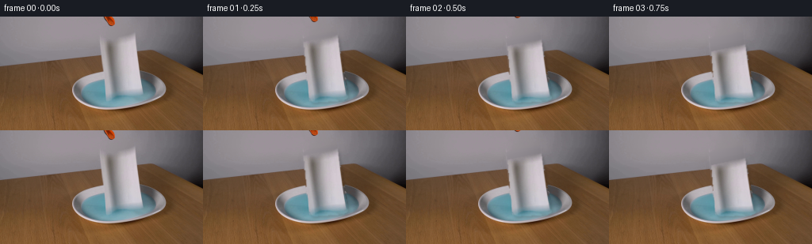
展开代码变化
--- 上一保存版本
+++ 本次保存版本
@@ -79,7 +79,14 @@
c0=np.mean(frame[y,max(0,xl-3):xl+2].astype(np.float32),axis=0)
c1=np.mean(frame[y,xr-1:min(W,xr+4)].astype(np.float32),axis=0)
q=(x-lo)/max(1,hi-lo)
- rep[y,x]=c0*(1-q)+c1*q
+ target=c0*(1-q)+c1*q
+ # Borrow fine wood grain from an unoccluded strip to the left,
+ # while matching its low-frequency colour to this location.
+ sx=max(4,x-49)
+ local=frame[y,sx].astype(np.float32)
+ ref=np.mean(frame[max(0,y-2):min(H,y+3),max(0,sx-3):sx+4]
+ .astype(np.float32),axis=(0,1))
+ rep[y,x]=np.clip(target+(local-ref)*0.75,0,255)
# Restore subtle noise/gradients and feather only inside the removed shape.
rep = cv2.GaussianBlur(rep, (0,0), 0.45)

可观测工具轨迹
实际执行的命令与返回图片。
命令 1exit 0
/bin/bash -lc "cat prompt.txt && printf '\\n--- GENERATION RULES ---\\n' && cat GENERATION_RULES.md"
命令 2exit 0
/bin/bash -lc "find . -maxdepth 2 -type f -printf '%p\\n' | sort && printf '\\n--- BINARIES ---\\n' && command -v ffmpeg && command -v python3 && command -v blender || true"
命令 3exit 0
/bin/bash -lc "sed -n '1,240p' artifact_io.py"
命令 4exit 0
/bin/bash -lc "python3 - <<'PY' mods=['PIL','numpy','cv2','scipy','imageio'] for m in mods: try: x=__import__(m); print(m,'OK',getattr(x,'__version__','')) except Exception as e: print(m,'NO',e) PY"
命令 5exit 0
/bin/bash -lc "python3 - <<'PY'
from PIL import Image
im=Image.open('first_frame.png')
im.crop((80,0,220,125)).resize((700,625)).save('.tmp/crop.png')
PY"命令 6exit 0
/bin/bash -lc "cat > .tmp/test_clean.py <<'PY'
import cv2, numpy as np
from PIL import Image
im=cv2.imread('first_frame.png')
mask=np.zeros(im.shape[:2],np.uint8)
# towel precise broad silhouette
poly=np.array([[125,24],[169,18],[183,99],[177,103],[139,107],[133,102]],np.int32)
cv2.fillPoly(mask,[poly],255)
# orange tool
cv2.ellipse(mask,(137,2),(9,15),-35,0,360,255,-1)
mask=cv2.GaussianBlur(mask,(3,3),0)
mask=(mask>10).astype(np.uint8)*255
for method,name in [(cv2.INPAINT_TELEA,'telea'),(cv2.INPAINT_NS,'ns')]:
out=cv2.inpaint(im,mask,7,method)
cv2.imwrite(f'.tmp/clean_{name}.png',out)
PY
python3 .tmp/test_clean.py"命令 7exit 0
/bin/bash -lc "cat > generate.py <<'PY'
from pathlib import Path
import cv2
import numpy as np
from PIL import Image
import artifact_io
CASE = Path(__file__).resolve().parent
W, H = 256, 144
def soft_mask(mask, sigma=0.8):
m = mask.astype(np.float32) / 255.0
if sigma:
m = cv2.GaussianBlur(m, (0, 0), sigma)
return np.clip(m, 0, 1)
def composite(base, layer, alpha):
a = np.clip(alpha[..., None], 0, 1)
return base * (1-a) + layer * a
def build_clean(frame):
\"\"\"Remove the towel/tool, reconstructing only the small occluded area.\"\"\"
img = frame.copy()
towel = np.zeros((H, W), np.uint8)
cv2.fillPoly(towel, [np.array([[124,23],[171,17],[183,99],[177,105],
[139,108],[133,103]], np.int32)], 255)
tool = np.zeros((H, W), np.uint8)
cv2.ellipse(tool, (137, 2), (8, 15), -35, 0, 360, 255, -1)
remove = cv2.bitwise_or(towel, tool)
# Telea gives a coherent first estimate and retains the original photographic noise.
clean = cv2.inpaint(cv2.cvtColor(img, cv2.COLOR_RGB2BGR), remove, 7,
cv2.INPAINT_TELEA)
clean = cv2.cvtColor(clean, cv2.COLOR_BGR2RGB).astype(np.float32)
# Replace inpaint streaks by smooth, scene-aware reconstruction. The wall is
# low-frequency; the plate is reconstructed row-wise from its visible sides.
yy, xx = np.mgrid[0:H, 0:W]
rep = clean.copy()
for y in range(H):
xs = np.flatnonzero(towel[y] > 0)
if not len(xs):
continue
lo, hi = int(xs.min()), int(xs.max())
if y < 66: # grey studio wall / rear tabletop
l0, r0 = max(0, lo-15), min(W-1, hi+15)
c0 = np.mean(frame[y, max(0,l0-4):l0+1], axis=0)
c1 = np.mean(frame[y, r0:min(W,r0+5)], axis=0)
for x in xs:
q = (x-lo)/max(1,hi-lo)
rep[y,x] = c0*(1-q)+c1*q
elif 70 <= y <= 117: # dish/liquid: use visible same-row material
outer = ((np.arange(W)-150)/60.0)**2 + ((y-92)/27.0)**2 <= 1
inner = ((np.arange(W)-150)/51.0)**2 + ((y-92)/19.0)**2 <= 1
for x in xs:
is_inner = inner[x]
candidates = np.flatnonzero((inner if is_inner else (outer & ~inner)) & (towel[y]==0))
if len(candidates):
# Weighted nearby material samples preserve the plate's vertical shading.
d = np.abs(candidates-x)
take = candidates[np.argsort(d)[:min(12,len(candidates))]]
col = np.mean(frame[y,take].astype(np.float32), axis=0)
rep[y,x] = col
# tabletop areas are already convincingly handled by inpainting.
# Restore subtle noise/gradients and feather only inside the removed shape.
rep = cv2.GaussianBlur(rep, (0,0), 0.45)
a = soft_mask(remove, 1.2)
out = composite(img.astype(np.float32), rep, a)
return np.clip(out, 0, 255).astype(np.uint8), towel, tool
def warp_rgba(rgb, alpha, src_quad, dst_quad):
M = cv2.getPerspectiveTransform(np.float32(src_quad), np.float32(dst_quad))
wrgb = cv2.warpPerspective(rgb, M, (W,H), flags=cv2.INTER_CUBIC,
borderMode=cv2.BORDER_CONSTANT, borderValue=0)
wa = cv2.warpPerspective(alpha, M, (W,H), flags=cv2.INTER_CUBIC,
borderMode=cv2.BORDER_CONSTANT, borderValue=0)
return wrgb.astype(np.float32), np.clip(wa.astype(np.float32)/255.0, 0, 1)
def add_ripples(base, i):
# Fine, low-contrast wave rings caused by paper meeting the liquid.
if not (3 <= i <= 12):
return base
out = base.copy()
p = (i-3)/9.0
fade = np.sin(np.pi*np.clip(p,0,1))
overlay = np.zeros_like(out, np.float32)
am = np.zeros((H,W), np.float32)
for k in range(2):
rx = int(13 + 26*p + 9*k)
ry = max(2, int(3 + 7*p + 2*k))
cv2.ellipse(overlay, (157,101), (rx,ry), 0, 188, 350,
(198,239,244), 1, cv2.LINE_AA)
cv2.ellipse(am, (157,101), (rx,ry), 0, 188, 350,
float(0.22*fade/(k+1)), 1, cv2.LINE_AA)
liquid = ((((np.arange(W)[None,:]-150)/51.0)**2 +
((np.arange(H)[:,None]-92)/19.0)**2) <= 1).astype(np.float32)
return composite(out, overlay, np.clip(am*liquid,0,1))
def main():
first = np.array(Image.open(CASE/'first_frame.png').convert('RGB'), dtype=np.uint8)
clean, towel_mask, tool_mask = build_clean(first)
src = np.array([[125,24],[170,18],[182,100],[137,105]], np.float32)
# Hand-authored perspective poses: a slight free drop followed by buckling and
# tipping into the shallow dish. End state remains fully within the plate.
poses = [
[[125,24],[170,18],[182,100],[137,105]],
[[125,27],[170,21],[182,102],[137,106]],
[[126,32],[171,27],[183,103],[137,106]],
[[127,39],[172,33],[184,104],[137,106]],
[[129,48],[174,40],[186,104],[137,106]],
[[131,58],[176,50],[188,104],[137,106]],
[[132,68],[178,61],[191,104],[137,106]],
[[132,76],[179,71],[194,103],[137,106]],
[[132,82],[178,78],[197,102],[137,106]],
[[132,84],[177,81],[198,101],[137,106]],
[[131,85],[176,82],[197,101],[138,107]],
[[131,85],[175,82],[196,101],[138,107]],
[[131,85],[175,83],[196,102],[138,107]],
]
while len(poses) < 20:
# Tiny damp-paper settling, not camera motion.
j=len(poses)
poses.append([[131,85],[175,83],[196,102+(1 if j>15 else 0)],[138,107]])
# More precise alpha: polygon shape with a softly antialiased edge.
alpha = np.zeros((H,W), np.uint8)
cv2.fillPoly(alpha, [np.array([[125,24],[170,18],[182,100],[177,104],
[138,107],[133,101]],np.int32)], 255)
alpha = cv2.GaussianBlur(alpha,(0,0),0.65)
# Tool extraction is color-keyed within its compact silhouette.
hsv=cv2.cvtColor(first,cv2.COLOR_RGB2HSV)
tool_alpha=((tool_mask>0) & (hsv[...,0] < 25) & (hsv[...,1] > 95)).astype(np.uint8)*255
tool_alpha=cv2.dilate(tool_alpha,np.ones((3,3),np.uint8),iterations=1)
tool_alpha=cv2.GaussianBlur(tool_alpha,(0,0),0.55)
frames=[]
for i in range(20):
if i==0:
frames.append(first.copy())
continue
base=clean.astype(np.float32)
base=add_ripples(base,i)
wrgb, wa=warp_rgba(first,alpha,src,np.float32(poses[i]))
# Soft contact shadow, strongest during the fall and beneath the resting towel.
sh=np.roll(np.roll(wa,3,axis=0),2,axis=1)
sh=cv2.GaussianBlur(sh,(0,0),2.0)
shadow_strength=0.15 if i<9 else 0.10
base=base*(1-shadow_strength*sh[...,None])
# Capillary uptake: blue liquid gradually darkens the lower/outer paper fibers.
if i>=4:
yy=np.arange(H)[:,None]
wetfront = 103 - min(15, (i-4)*1.35)
wet=np.clip((yy-wetfront+7)/10.0,0,1)*wa
if i>=9:
edge=cv2.GaussianBlur(wa,(0,0),2.0)-cv2.GaussianBlur(wa,(0,0),0.4)
wet=np.clip(wet + np.maximum(edge,0)*0.7 + (i-9)*0.018*wa,0,0.62)
tint=np.zeros_like(wrgb)+np.array([104,194,205],np.float32)
wrgb=wrgb*(1-0.38*wet[...,None])+tint*(0.38*wet[...,None])
base=composite(base,wrgb,wa)
# The released grabber withdraws straight upward and exits by frame 3.
if i<=2:
dy=-5*i
M=np.float32([[1,0,0],[0,1,dy]])
trgb=cv2.warpAffine(first,M,(W,H),flags=cv2.INTER_CUBIC,borderMode=cv2.BORDER_CONSTANT)
ta=cv2.warpAffine(tool_alpha,M,(W,H),flags=cv2.INTER_CUBIC,borderMode=cv2.BORDER_CONSTANT).astype(np.float32)/255
base=composite(base,trgb.astype(np.float32),ta)
frames.append(np.clip(base,0,255).astype(np.uint8))
arr=np.stack(frames,axis=0)
assert arr.shape==(20,144,256,3) and arr.dtype==np.uint8
assert np.array_equal(arr[0], first)
artifact_io.save(arr, CASE)
if __name__=='__main__':
main()
PY
python3 generate.py
python3 - <<'PY'
import numpy as np
from PIL import Image
z=np.load('pixels.npz')['pixels']
print('pixels',z.shape,z.dtype,'frame0_equal',np.array_equal(np.array(Image.open('first_frame.png')),np.stack([(z[:,:,0]>>16)&255,(z[:,:,0]>>8)&255,z[:,:,0]&255],-1).astype('uint8')))
PY"命令 8exit 0
/bin/bash -lc 'python3 generate.py'
命令 9exit 0
/bin/bash -lc "python3 - <<'PY'
from PIL import Image
for n in ['00','03','08','11']:
im=Image.open('frames/'+n+'.png').crop((105,55,215,120)).resize((660,390))
im.save('.tmp/f'+n+'.png')
PY"命令 10exit 0
/bin/bash -lc "python3 generate.py && python3 - <<'PY'
from pathlib import Path
import numpy as np
from PIL import Image
files=sorted((Path('frames')).glob('*.png'))
a=np.stack([np.asarray(Image.open(x)) for x in files])
f=np.asarray(Image.open('first_frame.png'))
print('frames:',len(files),'shape:',a.shape,'dtype:',a.dtype)
print('frame00 exact:',np.array_equal(a[0],f))
print('range:',int(a.min()),int(a.max()))
print('mean changed pixels/frame:',[int(np.any(a[i]"'!=a[i-1],axis=2).sum()) for i in range(1,20)])
print('"'outputs:',[(x.name,x.stat().st_size) for x in [Path('pixels.npz'),Path('index.html'),Path('inspection.png')]])
PY"视觉工具实际返回图片 1

视觉工具实际返回图片 2
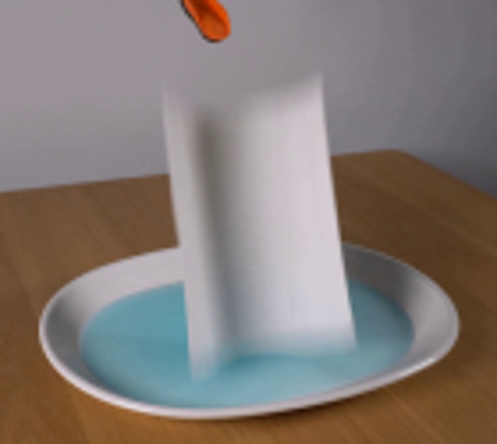
视觉工具实际返回图片 3
视觉工具实际返回图片 4
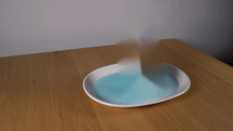
视觉工具实际返回图片 5

视觉工具实际返回图片 6

视觉工具实际返回图片 7

视觉工具实际返回图片 8
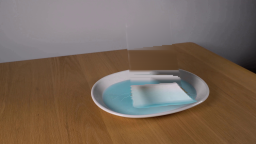
视觉工具实际返回图片 9
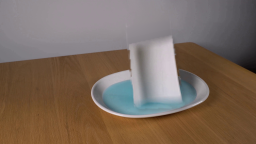
视觉工具实际返回图片 10
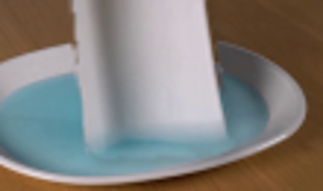
视觉工具实际返回图片 11
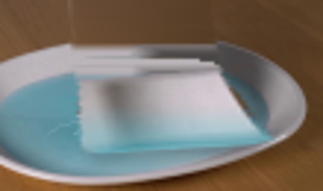
视觉工具实际返回图片 12
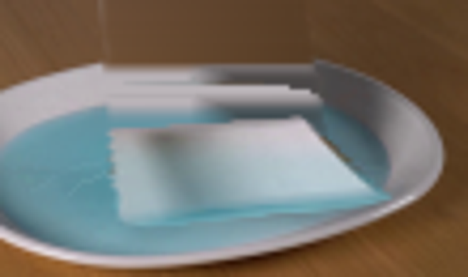
视觉工具实际返回图片 13
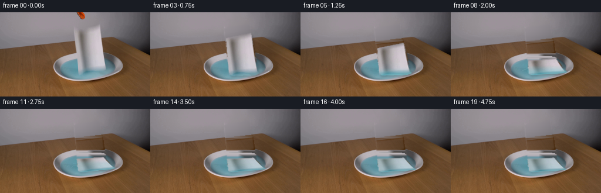
保存候选 4 份；完成命令 10 次；可验证图片返回 13 张。原始 API 响应与完整日志保留在本地。